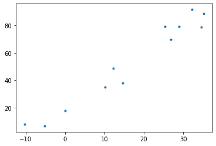
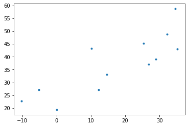
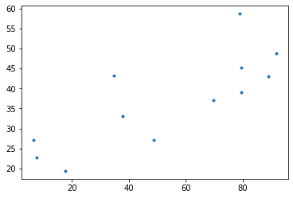
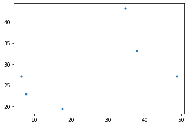
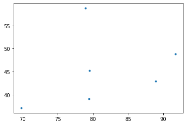

import numpy as np
import pandas as pd
import matplotlib.pyplot as plt 판다스– 인덱싱(2), 판다스–새로운열의할당(1), 아이스크림을 많이 먹으면 걸리는 병(1)
강의영상
https://youtube.com/playlist?list=PLQqh36zP38-yjgL4NsZ1NVQm_xXrrZzBA
imports
판다스: 인덱싱 3단계– column의 선택 (with 실전예제)
- 지금까지 정리
. |
[] |
.iloc |
.loc |
|
|---|---|---|---|---|
| row/단일레이블 | X | X | O | O |
| col/단일레이블 | O | O | O | O |
| row/레이블리스트 | X | X | O | O |
| col/레이블리스트 | X | O | O | O |
| row/슬라이싱 | X | O | O | O |
| col/슬라이싱 | X | X | O | O |
| row/bool,list | X | O | O | O |
| row/bool,ser | X | O | X | O |
| row/bool,map | X | X | O | O |
| col/bool,list | X | ? | ? | ? |
| col/bool,ser | X | ? | ? | ? |
| col/bool,map | X | ? | ? | ? |
- 채워보세요 (숙제입니다) –> 그냥 제가 채웠어요
. |
[] |
.iloc |
.loc |
commnets | |
|---|---|---|---|---|---|
| row/단일레이블 | X | X | O | O | |
| col/단일레이블 | O | O | O | O | |
| row/레이블리스트 | X | X | O | O | |
| col/레이블리스트 | X | O | O | O | |
| row/슬라이싱 | X | O | O | O | |
| col/슬라이싱 | X | X | O | O | |
| row/bool,list | X | O | O | O | |
| row/bool,ser | X | O | X | O | |
| row/bool,map | X | X | O | O | |
| col/bool,list | X | X | O | O | |
| col/bool,ser | X | X | X | X | 쓸일이없음 |
| col/bool,map | X | X | O | O |
데이터
df=pd.read_csv('https://raw.githubusercontent.com/PacktPublishing/Pandas-Cookbook/master/data/movie.csv')
df| color | director_name | num_critic_for_reviews | duration | director_facebook_likes | actor_3_facebook_likes | actor_2_name | actor_1_facebook_likes | gross | genres | ... | num_user_for_reviews | language | country | content_rating | budget | title_year | actor_2_facebook_likes | imdb_score | aspect_ratio | movie_facebook_likes | |
|---|---|---|---|---|---|---|---|---|---|---|---|---|---|---|---|---|---|---|---|---|---|
| 0 | Color | James Cameron | 723.0 | 178.0 | 0.0 | 855.0 | Joel David Moore | 1000.0 | 760505847.0 | Action|Adventure|Fantasy|Sci-Fi | ... | 3054.0 | English | USA | PG-13 | 237000000.0 | 2009.0 | 936.0 | 7.9 | 1.78 | 33000 |
| 1 | Color | Gore Verbinski | 302.0 | 169.0 | 563.0 | 1000.0 | Orlando Bloom | 40000.0 | 309404152.0 | Action|Adventure|Fantasy | ... | 1238.0 | English | USA | PG-13 | 300000000.0 | 2007.0 | 5000.0 | 7.1 | 2.35 | 0 |
| 2 | Color | Sam Mendes | 602.0 | 148.0 | 0.0 | 161.0 | Rory Kinnear | 11000.0 | 200074175.0 | Action|Adventure|Thriller | ... | 994.0 | English | UK | PG-13 | 245000000.0 | 2015.0 | 393.0 | 6.8 | 2.35 | 85000 |
| 3 | Color | Christopher Nolan | 813.0 | 164.0 | 22000.0 | 23000.0 | Christian Bale | 27000.0 | 448130642.0 | Action|Thriller | ... | 2701.0 | English | USA | PG-13 | 250000000.0 | 2012.0 | 23000.0 | 8.5 | 2.35 | 164000 |
| 4 | NaN | Doug Walker | NaN | NaN | 131.0 | NaN | Rob Walker | 131.0 | NaN | Documentary | ... | NaN | NaN | NaN | NaN | NaN | NaN | 12.0 | 7.1 | NaN | 0 |
| ... | ... | ... | ... | ... | ... | ... | ... | ... | ... | ... | ... | ... | ... | ... | ... | ... | ... | ... | ... | ... | ... |
| 4911 | Color | Scott Smith | 1.0 | 87.0 | 2.0 | 318.0 | Daphne Zuniga | 637.0 | NaN | Comedy|Drama | ... | 6.0 | English | Canada | NaN | NaN | 2013.0 | 470.0 | 7.7 | NaN | 84 |
| 4912 | Color | NaN | 43.0 | 43.0 | NaN | 319.0 | Valorie Curry | 841.0 | NaN | Crime|Drama|Mystery|Thriller | ... | 359.0 | English | USA | TV-14 | NaN | NaN | 593.0 | 7.5 | 16.00 | 32000 |
| 4913 | Color | Benjamin Roberds | 13.0 | 76.0 | 0.0 | 0.0 | Maxwell Moody | 0.0 | NaN | Drama|Horror|Thriller | ... | 3.0 | English | USA | NaN | 1400.0 | 2013.0 | 0.0 | 6.3 | NaN | 16 |
| 4914 | Color | Daniel Hsia | 14.0 | 100.0 | 0.0 | 489.0 | Daniel Henney | 946.0 | 10443.0 | Comedy|Drama|Romance | ... | 9.0 | English | USA | PG-13 | NaN | 2012.0 | 719.0 | 6.3 | 2.35 | 660 |
| 4915 | Color | Jon Gunn | 43.0 | 90.0 | 16.0 | 16.0 | Brian Herzlinger | 86.0 | 85222.0 | Documentary | ... | 84.0 | English | USA | PG | 1100.0 | 2004.0 | 23.0 | 6.6 | 1.85 | 456 |
4916 rows × 28 columns
- 열의 이름을 출력하여 보자.
기본인덱싱 (df 인덱싱공부 1단계 내용)
- color ~ num_voted_user 를 뽑고 + aspect_ratio 도 추가적으로 뽑고싶다. -> loc으로는 못하겠어요..
df.loc[:,['color':'num_voted_users','aspect_ratio']]SyntaxError: invalid syntax (1210972629.py, line 1)- (팁) 복잡한 조건은 iloc으로 쓰는게 편할때가 있다. \(\to\) 그런데 df.columns 변수들이 몇번인지 알아보기 힘듬 \(\to\) 아래와 같이 하면 열의 이름을 인덱스와 함께 출력할 수 있음
pd.Series(df.columns)0 color
1 director_name
2 num_critic_for_reviews
3 duration
4 director_facebook_likes
5 actor_3_facebook_likes
6 actor_2_name
7 actor_1_facebook_likes
8 gross
9 genres
10 actor_1_name
11 movie_title
12 num_voted_users
13 cast_total_facebook_likes
14 actor_3_name
15 facenumber_in_poster
16 plot_keywords
17 movie_imdb_link
18 num_user_for_reviews
19 language
20 country
21 content_rating
22 budget
23 title_year
24 actor_2_facebook_likes
25 imdb_score
26 aspect_ratio
27 movie_facebook_likes
dtype: objectlist(range(13))+[26][0, 1, 2, 3, 4, 5, 6, 7, 8, 9, 10, 11, 12, 26]df.iloc[:,list(range(13))+[26]] | color | director_name | num_critic_for_reviews | duration | director_facebook_likes | actor_3_facebook_likes | actor_2_name | actor_1_facebook_likes | gross | genres | actor_1_name | movie_title | num_voted_users | aspect_ratio | |
|---|---|---|---|---|---|---|---|---|---|---|---|---|---|---|
| 0 | Color | James Cameron | 723.0 | 178.0 | 0.0 | 855.0 | Joel David Moore | 1000.0 | 760505847.0 | Action|Adventure|Fantasy|Sci-Fi | CCH Pounder | Avatar | 886204 | 1.78 |
| 1 | Color | Gore Verbinski | 302.0 | 169.0 | 563.0 | 1000.0 | Orlando Bloom | 40000.0 | 309404152.0 | Action|Adventure|Fantasy | Johnny Depp | Pirates of the Caribbean: At World's End | 471220 | 2.35 |
| 2 | Color | Sam Mendes | 602.0 | 148.0 | 0.0 | 161.0 | Rory Kinnear | 11000.0 | 200074175.0 | Action|Adventure|Thriller | Christoph Waltz | Spectre | 275868 | 2.35 |
| 3 | Color | Christopher Nolan | 813.0 | 164.0 | 22000.0 | 23000.0 | Christian Bale | 27000.0 | 448130642.0 | Action|Thriller | Tom Hardy | The Dark Knight Rises | 1144337 | 2.35 |
| 4 | NaN | Doug Walker | NaN | NaN | 131.0 | NaN | Rob Walker | 131.0 | NaN | Documentary | Doug Walker | Star Wars: Episode VII - The Force Awakens | 8 | NaN |
| ... | ... | ... | ... | ... | ... | ... | ... | ... | ... | ... | ... | ... | ... | ... |
| 4911 | Color | Scott Smith | 1.0 | 87.0 | 2.0 | 318.0 | Daphne Zuniga | 637.0 | NaN | Comedy|Drama | Eric Mabius | Signed Sealed Delivered | 629 | NaN |
| 4912 | Color | NaN | 43.0 | 43.0 | NaN | 319.0 | Valorie Curry | 841.0 | NaN | Crime|Drama|Mystery|Thriller | Natalie Zea | The Following | 73839 | 16.00 |
| 4913 | Color | Benjamin Roberds | 13.0 | 76.0 | 0.0 | 0.0 | Maxwell Moody | 0.0 | NaN | Drama|Horror|Thriller | Eva Boehnke | A Plague So Pleasant | 38 | NaN |
| 4914 | Color | Daniel Hsia | 14.0 | 100.0 | 0.0 | 489.0 | Daniel Henney | 946.0 | 10443.0 | Comedy|Drama|Romance | Alan Ruck | Shanghai Calling | 1255 | 2.35 |
| 4915 | Color | Jon Gunn | 43.0 | 90.0 | 16.0 | 16.0 | Brian Herzlinger | 86.0 | 85222.0 | Documentary | John August | My Date with Drew | 4285 | 1.85 |
4916 rows × 14 columns
actor라는 단어가 포함된 column 선택
- 다시 열의 이름들을 확인
df.columnsIndex(['color', 'director_name', 'num_critic_for_reviews', 'duration',
'director_facebook_likes', 'actor_3_facebook_likes', 'actor_2_name',
'actor_1_facebook_likes', 'gross', 'genres', 'actor_1_name',
'movie_title', 'num_voted_users', 'cast_total_facebook_likes',
'actor_3_name', 'facenumber_in_poster', 'plot_keywords',
'movie_imdb_link', 'num_user_for_reviews', 'language', 'country',
'content_rating', 'budget', 'title_year', 'actor_2_facebook_likes',
'imdb_score', 'aspect_ratio', 'movie_facebook_likes'],
dtype='object')- 방법1
df.iloc[:,list(map(lambda x : 'actor' in x, df.columns) )]| actor_3_facebook_likes | actor_2_name | actor_1_facebook_likes | actor_1_name | actor_3_name | actor_2_facebook_likes | |
|---|---|---|---|---|---|---|
| 0 | 855.0 | Joel David Moore | 1000.0 | CCH Pounder | Wes Studi | 936.0 |
| 1 | 1000.0 | Orlando Bloom | 40000.0 | Johnny Depp | Jack Davenport | 5000.0 |
| 2 | 161.0 | Rory Kinnear | 11000.0 | Christoph Waltz | Stephanie Sigman | 393.0 |
| 3 | 23000.0 | Christian Bale | 27000.0 | Tom Hardy | Joseph Gordon-Levitt | 23000.0 |
| 4 | NaN | Rob Walker | 131.0 | Doug Walker | NaN | 12.0 |
| ... | ... | ... | ... | ... | ... | ... |
| 4911 | 318.0 | Daphne Zuniga | 637.0 | Eric Mabius | Crystal Lowe | 470.0 |
| 4912 | 319.0 | Valorie Curry | 841.0 | Natalie Zea | Sam Underwood | 593.0 |
| 4913 | 0.0 | Maxwell Moody | 0.0 | Eva Boehnke | David Chandler | 0.0 |
| 4914 | 489.0 | Daniel Henney | 946.0 | Alan Ruck | Eliza Coupe | 719.0 |
| 4915 | 16.0 | Brian Herzlinger | 86.0 | John August | Jon Gunn | 23.0 |
4916 rows × 6 columns
- 방법2
df.loc[:,list(map(lambda x : 'actor' in x, df.columns) )]| actor_3_facebook_likes | actor_2_name | actor_1_facebook_likes | actor_1_name | actor_3_name | actor_2_facebook_likes | |
|---|---|---|---|---|---|---|
| 0 | 855.0 | Joel David Moore | 1000.0 | CCH Pounder | Wes Studi | 936.0 |
| 1 | 1000.0 | Orlando Bloom | 40000.0 | Johnny Depp | Jack Davenport | 5000.0 |
| 2 | 161.0 | Rory Kinnear | 11000.0 | Christoph Waltz | Stephanie Sigman | 393.0 |
| 3 | 23000.0 | Christian Bale | 27000.0 | Tom Hardy | Joseph Gordon-Levitt | 23000.0 |
| 4 | NaN | Rob Walker | 131.0 | Doug Walker | NaN | 12.0 |
| ... | ... | ... | ... | ... | ... | ... |
| 4911 | 318.0 | Daphne Zuniga | 637.0 | Eric Mabius | Crystal Lowe | 470.0 |
| 4912 | 319.0 | Valorie Curry | 841.0 | Natalie Zea | Sam Underwood | 593.0 |
| 4913 | 0.0 | Maxwell Moody | 0.0 | Eva Boehnke | David Chandler | 0.0 |
| 4914 | 489.0 | Daniel Henney | 946.0 | Alan Ruck | Eliza Coupe | 719.0 |
| 4915 | 16.0 | Brian Herzlinger | 86.0 | John August | Jon Gunn | 23.0 |
4916 rows × 6 columns
- 방법3
df.iloc[:,map(lambda x : 'actor' in x, df.columns)]| actor_3_facebook_likes | actor_2_name | actor_1_facebook_likes | actor_1_name | actor_3_name | actor_2_facebook_likes | |
|---|---|---|---|---|---|---|
| 0 | 855.0 | Joel David Moore | 1000.0 | CCH Pounder | Wes Studi | 936.0 |
| 1 | 1000.0 | Orlando Bloom | 40000.0 | Johnny Depp | Jack Davenport | 5000.0 |
| 2 | 161.0 | Rory Kinnear | 11000.0 | Christoph Waltz | Stephanie Sigman | 393.0 |
| 3 | 23000.0 | Christian Bale | 27000.0 | Tom Hardy | Joseph Gordon-Levitt | 23000.0 |
| 4 | NaN | Rob Walker | 131.0 | Doug Walker | NaN | 12.0 |
| ... | ... | ... | ... | ... | ... | ... |
| 4911 | 318.0 | Daphne Zuniga | 637.0 | Eric Mabius | Crystal Lowe | 470.0 |
| 4912 | 319.0 | Valorie Curry | 841.0 | Natalie Zea | Sam Underwood | 593.0 |
| 4913 | 0.0 | Maxwell Moody | 0.0 | Eva Boehnke | David Chandler | 0.0 |
| 4914 | 489.0 | Daniel Henney | 946.0 | Alan Ruck | Eliza Coupe | 719.0 |
| 4915 | 16.0 | Brian Herzlinger | 86.0 | John August | Jon Gunn | 23.0 |
4916 rows × 6 columns
- 방법4
df.loc[:,map(lambda x : 'actor' in x, df.columns)]| actor_3_facebook_likes | actor_2_name | actor_1_facebook_likes | actor_1_name | actor_3_name | actor_2_facebook_likes | |
|---|---|---|---|---|---|---|
| 0 | 855.0 | Joel David Moore | 1000.0 | CCH Pounder | Wes Studi | 936.0 |
| 1 | 1000.0 | Orlando Bloom | 40000.0 | Johnny Depp | Jack Davenport | 5000.0 |
| 2 | 161.0 | Rory Kinnear | 11000.0 | Christoph Waltz | Stephanie Sigman | 393.0 |
| 3 | 23000.0 | Christian Bale | 27000.0 | Tom Hardy | Joseph Gordon-Levitt | 23000.0 |
| 4 | NaN | Rob Walker | 131.0 | Doug Walker | NaN | 12.0 |
| ... | ... | ... | ... | ... | ... | ... |
| 4911 | 318.0 | Daphne Zuniga | 637.0 | Eric Mabius | Crystal Lowe | 470.0 |
| 4912 | 319.0 | Valorie Curry | 841.0 | Natalie Zea | Sam Underwood | 593.0 |
| 4913 | 0.0 | Maxwell Moody | 0.0 | Eva Boehnke | David Chandler | 0.0 |
| 4914 | 489.0 | Daniel Henney | 946.0 | Alan Ruck | Eliza Coupe | 719.0 |
| 4915 | 16.0 | Brian Herzlinger | 86.0 | John August | Jon Gunn | 23.0 |
4916 rows × 6 columns
s로 끝나는 column 선택
- 방법1
df.iloc[:,map(lambda x: 's' == x[-1],df.columns )]| num_critic_for_reviews | director_facebook_likes | actor_3_facebook_likes | actor_1_facebook_likes | gross | genres | num_voted_users | cast_total_facebook_likes | plot_keywords | num_user_for_reviews | actor_2_facebook_likes | movie_facebook_likes | |
|---|---|---|---|---|---|---|---|---|---|---|---|---|
| 0 | 723.0 | 0.0 | 855.0 | 1000.0 | 760505847.0 | Action|Adventure|Fantasy|Sci-Fi | 886204 | 4834 | avatar|future|marine|native|paraplegic | 3054.0 | 936.0 | 33000 |
| 1 | 302.0 | 563.0 | 1000.0 | 40000.0 | 309404152.0 | Action|Adventure|Fantasy | 471220 | 48350 | goddess|marriage ceremony|marriage proposal|pi... | 1238.0 | 5000.0 | 0 |
| 2 | 602.0 | 0.0 | 161.0 | 11000.0 | 200074175.0 | Action|Adventure|Thriller | 275868 | 11700 | bomb|espionage|sequel|spy|terrorist | 994.0 | 393.0 | 85000 |
| 3 | 813.0 | 22000.0 | 23000.0 | 27000.0 | 448130642.0 | Action|Thriller | 1144337 | 106759 | deception|imprisonment|lawlessness|police offi... | 2701.0 | 23000.0 | 164000 |
| 4 | NaN | 131.0 | NaN | 131.0 | NaN | Documentary | 8 | 143 | NaN | NaN | 12.0 | 0 |
| ... | ... | ... | ... | ... | ... | ... | ... | ... | ... | ... | ... | ... |
| 4911 | 1.0 | 2.0 | 318.0 | 637.0 | NaN | Comedy|Drama | 629 | 2283 | fraud|postal worker|prison|theft|trial | 6.0 | 470.0 | 84 |
| 4912 | 43.0 | NaN | 319.0 | 841.0 | NaN | Crime|Drama|Mystery|Thriller | 73839 | 1753 | cult|fbi|hideout|prison escape|serial killer | 359.0 | 593.0 | 32000 |
| 4913 | 13.0 | 0.0 | 0.0 | 0.0 | NaN | Drama|Horror|Thriller | 38 | 0 | NaN | 3.0 | 0.0 | 16 |
| 4914 | 14.0 | 0.0 | 489.0 | 946.0 | 10443.0 | Comedy|Drama|Romance | 1255 | 2386 | NaN | 9.0 | 719.0 | 660 |
| 4915 | 43.0 | 16.0 | 16.0 | 86.0 | 85222.0 | Documentary | 4285 | 163 | actress name in title|crush|date|four word tit... | 84.0 | 23.0 | 456 |
4916 rows × 12 columns
- 방법2
df.loc[:,map(lambda x: 's' == x[-1],df.columns )]| num_critic_for_reviews | director_facebook_likes | actor_3_facebook_likes | actor_1_facebook_likes | gross | genres | num_voted_users | cast_total_facebook_likes | plot_keywords | num_user_for_reviews | actor_2_facebook_likes | movie_facebook_likes | |
|---|---|---|---|---|---|---|---|---|---|---|---|---|
| 0 | 723.0 | 0.0 | 855.0 | 1000.0 | 760505847.0 | Action|Adventure|Fantasy|Sci-Fi | 886204 | 4834 | avatar|future|marine|native|paraplegic | 3054.0 | 936.0 | 33000 |
| 1 | 302.0 | 563.0 | 1000.0 | 40000.0 | 309404152.0 | Action|Adventure|Fantasy | 471220 | 48350 | goddess|marriage ceremony|marriage proposal|pi... | 1238.0 | 5000.0 | 0 |
| 2 | 602.0 | 0.0 | 161.0 | 11000.0 | 200074175.0 | Action|Adventure|Thriller | 275868 | 11700 | bomb|espionage|sequel|spy|terrorist | 994.0 | 393.0 | 85000 |
| 3 | 813.0 | 22000.0 | 23000.0 | 27000.0 | 448130642.0 | Action|Thriller | 1144337 | 106759 | deception|imprisonment|lawlessness|police offi... | 2701.0 | 23000.0 | 164000 |
| 4 | NaN | 131.0 | NaN | 131.0 | NaN | Documentary | 8 | 143 | NaN | NaN | 12.0 | 0 |
| ... | ... | ... | ... | ... | ... | ... | ... | ... | ... | ... | ... | ... |
| 4911 | 1.0 | 2.0 | 318.0 | 637.0 | NaN | Comedy|Drama | 629 | 2283 | fraud|postal worker|prison|theft|trial | 6.0 | 470.0 | 84 |
| 4912 | 43.0 | NaN | 319.0 | 841.0 | NaN | Crime|Drama|Mystery|Thriller | 73839 | 1753 | cult|fbi|hideout|prison escape|serial killer | 359.0 | 593.0 | 32000 |
| 4913 | 13.0 | 0.0 | 0.0 | 0.0 | NaN | Drama|Horror|Thriller | 38 | 0 | NaN | 3.0 | 0.0 | 16 |
| 4914 | 14.0 | 0.0 | 489.0 | 946.0 | 10443.0 | Comedy|Drama|Romance | 1255 | 2386 | NaN | 9.0 | 719.0 | 660 |
| 4915 | 43.0 | 16.0 | 16.0 | 86.0 | 85222.0 | Documentary | 4285 | 163 | actress name in title|crush|date|four word tit... | 84.0 | 23.0 | 456 |
4916 rows × 12 columns
c 혹은 d로 시작하는 column 선택
- 방법1
df.iloc[:,map(lambda x: 'c' == x[0] or 'd' == x[0] ,df.columns )]| color | director_name | duration | director_facebook_likes | cast_total_facebook_likes | country | content_rating | |
|---|---|---|---|---|---|---|---|
| 0 | Color | James Cameron | 178.0 | 0.0 | 4834 | USA | PG-13 |
| 1 | Color | Gore Verbinski | 169.0 | 563.0 | 48350 | USA | PG-13 |
| 2 | Color | Sam Mendes | 148.0 | 0.0 | 11700 | UK | PG-13 |
| 3 | Color | Christopher Nolan | 164.0 | 22000.0 | 106759 | USA | PG-13 |
| 4 | NaN | Doug Walker | NaN | 131.0 | 143 | NaN | NaN |
| ... | ... | ... | ... | ... | ... | ... | ... |
| 4911 | Color | Scott Smith | 87.0 | 2.0 | 2283 | Canada | NaN |
| 4912 | Color | NaN | 43.0 | NaN | 1753 | USA | TV-14 |
| 4913 | Color | Benjamin Roberds | 76.0 | 0.0 | 0 | USA | NaN |
| 4914 | Color | Daniel Hsia | 100.0 | 0.0 | 2386 | USA | PG-13 |
| 4915 | Color | Jon Gunn | 90.0 | 16.0 | 163 | USA | PG |
4916 rows × 7 columns
- 방법2
df.loc[:,map(lambda x: 'c' == x[0] or 'd' == x[0] ,df.columns )]| color | director_name | duration | director_facebook_likes | cast_total_facebook_likes | country | content_rating | |
|---|---|---|---|---|---|---|---|
| 0 | Color | James Cameron | 178.0 | 0.0 | 4834 | USA | PG-13 |
| 1 | Color | Gore Verbinski | 169.0 | 563.0 | 48350 | USA | PG-13 |
| 2 | Color | Sam Mendes | 148.0 | 0.0 | 11700 | UK | PG-13 |
| 3 | Color | Christopher Nolan | 164.0 | 22000.0 | 106759 | USA | PG-13 |
| 4 | NaN | Doug Walker | NaN | 131.0 | 143 | NaN | NaN |
| ... | ... | ... | ... | ... | ... | ... | ... |
| 4911 | Color | Scott Smith | 87.0 | 2.0 | 2283 | Canada | NaN |
| 4912 | Color | NaN | 43.0 | NaN | 1753 | USA | TV-14 |
| 4913 | Color | Benjamin Roberds | 76.0 | 0.0 | 0 | USA | NaN |
| 4914 | Color | Daniel Hsia | 100.0 | 0.0 | 2386 | USA | PG-13 |
| 4915 | Color | Jon Gunn | 90.0 | 16.0 | 163 | USA | PG |
4916 rows × 7 columns
판다스: 새로운 열의 할당 1단계
방법1: concat
df = pd.DataFrame({'a':[1,2,3],'b':[2,3,4]})
df| a | b | |
|---|---|---|
| 0 | 1 | 2 |
| 1 | 2 | 3 |
| 2 | 3 | 4 |
_df = pd.DataFrame({'c':[3,4,5]})
_df| c | |
|---|---|
| 0 | 3 |
| 1 | 4 |
| 2 | 5 |
pd.concat([df,_df],axis=1)| a | b | c | |
|---|---|---|---|
| 0 | 1 | 2 | 3 |
| 1 | 2 | 3 | 4 |
| 2 | 3 | 4 | 5 |
방법2: 4가지 컨셉에 따른 할당
# 컨셉1: 불가능
df = pd.DataFrame({'a':[1,2,3],'b':[2,3,4]})
df| a | b | |
|---|---|---|
| 0 | 1 | 2 |
| 1 | 2 | 3 |
| 2 | 3 | 4 |
df.c = pd.Series([1,2,3])
df/home/cgb4/anaconda3/envs/py37/lib/python3.7/site-packages/ipykernel_launcher.py:1: UserWarning: Pandas doesn't allow columns to be created via a new attribute name - see https://pandas.pydata.org/pandas-docs/stable/indexing.html#attribute-access
"""Entry point for launching an IPython kernel.| a | b | |
|---|---|---|
| 0 | 1 | 2 |
| 1 | 2 | 3 |
| 2 | 3 | 4 |
# 컨셉2: 가능
(예시1)
df = pd.DataFrame({'a':[1,2,3],'b':[2,3,4]})
df| a | b | |
|---|---|---|
| 0 | 1 | 2 |
| 1 | 2 | 3 |
| 2 | 3 | 4 |
df['c']=[3,4,5]
df| a | b | c | |
|---|---|---|---|
| 0 | 1 | 2 | 3 |
| 1 | 2 | 3 | 4 |
| 2 | 3 | 4 | 5 |
(예시2)
df = pd.DataFrame({'a':[1,2,3],'b':[2,3,4]})
df| a | b | |
|---|---|---|
| 0 | 1 | 2 |
| 1 | 2 | 3 |
| 2 | 3 | 4 |
df[['c','d']]=np.array([[3,4,5],[4,5,6]]).T # 굳이..
df| a | b | c | d | |
|---|---|---|---|---|
| 0 | 1 | 2 | 3 | 4 |
| 1 | 2 | 3 | 4 | 5 |
| 2 | 3 | 4 | 5 | 6 |
(예시3)
df = pd.DataFrame({'a':[1,2,3],'b':[2,3,4]})
df| a | b | |
|---|---|---|
| 0 | 1 | 2 |
| 1 | 2 | 3 |
| 2 | 3 | 4 |
df['c'],df['d']=[3,4,5],[4,5,6]
df| a | b | c | d | |
|---|---|---|---|---|
| 0 | 1 | 2 | 3 | 4 |
| 1 | 2 | 3 | 4 | 5 |
| 2 | 3 | 4 | 5 | 6 |
# 컨셉3: 불가능
(예시1)
df = pd.DataFrame({'a':[1,2,3],'b':[2,3,4]})
df| a | b | |
|---|---|---|
| 0 | 1 | 2 |
| 1 | 2 | 3 |
| 2 | 3 | 4 |
df.iloc[:,2] = [3,4,5]
dfIndexError: iloc cannot enlarge its target object# 컨셉4: 가능
(예시1)
df = pd.DataFrame({'a':[1,2,3],'b':[2,3,4]})
df| a | b | |
|---|---|---|
| 0 | 1 | 2 |
| 1 | 2 | 3 |
| 2 | 3 | 4 |
df.loc[:,'c'] = [3,4,5]
df| a | b | c | |
|---|---|---|---|
| 0 | 1 | 2 | 3 |
| 1 | 2 | 3 | 4 |
| 2 | 3 | 4 | 5 |
(예시2)
df = pd.DataFrame({'a':[1,2,3],'b':[2,3,4]})
df| a | b | |
|---|---|---|
| 0 | 1 | 2 |
| 1 | 2 | 3 |
| 2 | 3 | 4 |
df.loc[:,['c','d']] = np.array([[3,4,5],[4,5,6]]).T # 이거 솔직히 되는지 몰랐어요..
df| a | b | c | d | |
|---|---|---|---|---|
| 0 | 1 | 2 | 3 | 4 |
| 1 | 2 | 3 | 4 | 5 |
| 2 | 3 | 4 | 5 | 6 |
(예시3)
df = pd.DataFrame({'a':[1,2,3],'b':[2,3,4]})
df| a | b | |
|---|---|---|
| 0 | 1 | 2 |
| 1 | 2 | 3 |
| 2 | 3 | 4 |
df.loc[:,'c'],df.loc[:,'d'] = [3,4,5],[4,5,6]
df| a | b | c | d | |
|---|---|---|---|---|
| 0 | 1 | 2 | 3 | 4 |
| 1 | 2 | 3 | 4 | 5 |
| 2 | 3 | 4 | 5 | 6 |
방법3: .assign으로 할당 (\(\star\)) – 제 최애
df = pd.DataFrame({'a':[1,2,3],'b':[2,3,4]})
df| a | b | |
|---|---|---|
| 0 | 1 | 2 |
| 1 | 2 | 3 |
| 2 | 3 | 4 |
df.assign(c=[3,4,5])| a | b | c | |
|---|---|---|---|
| 0 | 1 | 2 | 3 |
| 1 | 2 | 3 | 4 |
| 2 | 3 | 4 | 5 |
df.assign(c=[3,4,5],d=[4,5,6])| a | b | c | d | |
|---|---|---|---|---|
| 0 | 1 | 2 | 3 | 4 |
| 1 | 2 | 3 | 4 | 5 |
| 2 | 3 | 4 | 5 | 6 |
df.assign(c=[3,4,5]).assign(d=[4,5,6])| a | b | c | d | |
|---|---|---|---|---|
| 0 | 1 | 2 | 3 | 4 |
| 1 | 2 | 3 | 4 | 5 |
| 2 | 3 | 4 | 5 | 6 |
방법4: .eval을 이용한 할당
df = pd.DataFrame({'a':[1,2,3],'b':[2,3,4]})
df| a | b | |
|---|---|---|
| 0 | 1 | 2 |
| 1 | 2 | 3 |
| 2 | 3 | 4 |
df.eval('c=[3,4,5]')| a | b | c | |
|---|---|---|---|
| 0 | 1 | 2 | 3 |
| 1 | 2 | 3 | 4 |
| 2 | 3 | 4 | 5 |
df.eval('c=[3,4,5]').eval('d=[4,5,6]')| a | b | c | d | |
|---|---|---|---|---|
| 0 | 1 | 2 | 3 | 4 |
| 1 | 2 | 3 | 4 | 5 |
| 2 | 3 | 4 | 5 | 6 |
연습해보기
# 데이터프레임 생성
df=pd.DataFrame({'x':np.random.randn(1000),'y':np.random.randn(1000)})
df| x | y | |
|---|---|---|
| 0 | 1.085469 | -1.427839 |
| 1 | -1.473272 | -1.527442 |
| 2 | -1.007274 | -1.312202 |
| 3 | 1.220634 | -0.474995 |
| 4 | -0.101496 | 1.636326 |
| ... | ... | ... |
| 995 | -0.668557 | -0.435391 |
| 996 | 0.455894 | 0.796826 |
| 997 | -1.004412 | 1.843344 |
| 998 | -2.115145 | -1.971965 |
| 999 | 0.861141 | -0.193742 |
1000 rows × 2 columns
# 새로운열 r을 생성하고 \(r=\sqrt{x^2 + y^2}\)를 계산
- 방법1: 브로드캐스팅
df.assign(r=np.sqrt(df.x**2 + df.y**2))| x | y | r | |
|---|---|---|---|
| 0 | 1.085469 | -1.427839 | 1.793590 |
| 1 | -1.473272 | -1.527442 | 2.122171 |
| 2 | -1.007274 | -1.312202 | 1.654229 |
| 3 | 1.220634 | -0.474995 | 1.309796 |
| 4 | -0.101496 | 1.636326 | 1.639470 |
| ... | ... | ... | ... |
| 995 | -0.668557 | -0.435391 | 0.797831 |
| 996 | 0.455894 | 0.796826 | 0.918026 |
| 997 | -1.004412 | 1.843344 | 2.099229 |
| 998 | -2.115145 | -1.971965 | 2.891796 |
| 999 | 0.861141 | -0.193742 | 0.882667 |
1000 rows × 3 columns
- 방법2: lambda + map을 이용한 개별원소 계산
df.assign(r=list(map(lambda x,y: np.sqrt(x**2+y**2), df.x,df.y)))| x | y | r | |
|---|---|---|---|
| 0 | 1.085469 | -1.427839 | 1.793590 |
| 1 | -1.473272 | -1.527442 | 2.122171 |
| 2 | -1.007274 | -1.312202 | 1.654229 |
| 3 | 1.220634 | -0.474995 | 1.309796 |
| 4 | -0.101496 | 1.636326 | 1.639470 |
| ... | ... | ... | ... |
| 995 | -0.668557 | -0.435391 | 0.797831 |
| 996 | 0.455894 | 0.796826 | 0.918026 |
| 997 | -1.004412 | 1.843344 | 2.099229 |
| 998 | -2.115145 | -1.971965 | 2.891796 |
| 999 | 0.861141 | -0.193742 | 0.882667 |
1000 rows × 3 columns
- 방법3: eval
df.eval('r=sqrt(x**2+y**2)')| x | y | r | |
|---|---|---|---|
| 0 | 1.085469 | -1.427839 | 1.793590 |
| 1 | -1.473272 | -1.527442 | 2.122171 |
| 2 | -1.007274 | -1.312202 | 1.654229 |
| 3 | 1.220634 | -0.474995 | 1.309796 |
| 4 | -0.101496 | 1.636326 | 1.639470 |
| ... | ... | ... | ... |
| 995 | -0.668557 | -0.435391 | 0.797831 |
| 996 | 0.455894 | 0.796826 | 0.918026 |
| 997 | -1.004412 | 1.843344 | 2.099229 |
| 998 | -2.115145 | -1.971965 | 2.891796 |
| 999 | 0.861141 | -0.193742 | 0.882667 |
1000 rows × 3 columns
아이스크림을 많이 먹으면 걸리는 병 (1)
- ref- 데이터 과학자의 사고법: 더 나은 선택을 위한 통계학적 통찰의 힘
- 구매할만한 책입니다
- 내용요약
- 여름 \(\to\) 수영장 \(\to\) 소아마비
- 여름 \(\to\) 아이스크림
- 아이스크림과 소아마비는 상관관계가 높다: 아이스크림 성분중에서 소아마비를 유발하는 유해물질이 있을 것이다 (?)
- 아래와 같이 모형을 간단하게 하자.
- 온도 \(\to\) 소아마비
- 온도 \(\to\) 아이스크림
Toy exam
- 교재의 예제상황은 예를들면 아래와 같다.
(숨은진짜상황1)
\[\text{아이스크림 판매량} = 20 + 2 \times \text{온도} + \epsilon\]
np.random.seed(1)
temp= np.array([-10.2, -5.2, 0.1, 10.1, 12.2, 14.7,
25.4, 26.8, 28.9, 35.1, 32.2, 34.6])
eps= np.random.normal(size=12,scale=5)
icecream= 20 + temp * 2 + epsplt.plot(temp,icecream,'.')
- 온도와 아이스크림 판매량의 산점도
(숨은진짜상황2)
\[\text{소아마비 반응수치} = 30 + 0.5 \times \text{온도} + \epsilon\] - 좌변은 소아마비임을 나타내는 어떠한 반응수치라고 생각하자.
np.random.seed(2)
eps = np.random.normal(size=12,scale=5)
disease = 30+ temp* 0.5 + epsplt.plot(temp,disease,'.')
- 온도와 소아마비의 산점도
(우리가 데이터로부터 관측한 상황)
- 아이스크림과 질병의 산점도를 그려보자.
plt.plot(icecream,disease,'.')
- 양의 상관관계에 있다.
- 아이스크림 중 어떠한 물질이 소아마비를 일으키는것이 분명하므로 (인과성이 분명해보이니까) 아래와 같은 모형을 세우자. <– 여기서부터 틀렸음
\[{\tt disease}_i =\beta_0 +\beta_1 {\tt icecream}_i +\epsilon_i,\quad \textbf{for} ~~ i=1,2,\dots, 12\]
- 적절한 \(\beta_0\)와 \(\beta_1\)을 추정하면 우리는 아이스크림과 소아마비의 관계를 알 수 있다. <– 틀린주장
- 틀린 모형
- 도데체 우리가 뭘 잘못했는가?
- 두 변수 사이에 상관관계가 있어도 실제 원인은 다른 변수에 숨겨져 있는 경우가 많다.
(ex1)
- 온도 \(\to\) 익사
- 온도 \(\to\) 아이스크림
- 아이스크림과 익사자도 양의 상관관계에 있을것이다.
- 아이스크림을 먹이면 물에 빠져 죽는다 \(\to\) 틀린주장
- 사실 기온이 숨겨진 원인이다. 기온이 증가하면 아이스크림 판매량도 증가하고 폭염때문에 익사사고율도 높아지는 구조이다.
(ex2)
- 인구수 \(\to\) 교회
- 인구수 \(\to\) 범죄건수
- 지역별 교회와 범죄건수를 살펴보면 상관관계가 높게 나올것임
- 교회를 지으면 범죄건수도 증가한다? \(\to\) 틀린주장
- 사실 인구가 숨겨진 요인임
- ex2, ex1에 대하여 바른 분석을 하려면?
- ex2: 인구가 비슷한 도시끼리 묶어서 비교해보면 교회와 범죄의 건수는 양의 상관관계에 있지 않을것임
- ex1: 온도가 비슷한 그룹끼리 묶어보자.
- 올바른 분석: 온도가 비슷한 그룹끼리 묶어서 그려보자. \(\to\) 상관계수가 줄어들 것이다.
plt.plot(icecream[:6],disease[:6],'.')
plt.plot(icecream[6:],disease[6:],'.')
- 진짜로 선형관계가 약해졌다..
숙제 (수업시간에 한 내용 X)
df = pd.DataFrame({'a':[1,2,3,4],'b':[2,3,4,5],'c':[3,4,5,6],'d':[4,5,6,7]})
df| a | b | c | d | |
|---|---|---|---|---|
| 0 | 1 | 2 | 3 | 4 |
| 1 | 2 | 3 | 4 | 5 |
| 2 | 3 | 4 | 5 | 6 |
| 3 | 4 | 5 | 6 | 7 |
아래의 결과를 관찰하고 drop의 기능을 유추하라.
(예시1)
df.drop(columns='a')| b | c | d | |
|---|---|---|---|
| 0 | 2 | 3 | 4 |
| 1 | 3 | 4 | 5 |
| 2 | 4 | 5 | 6 |
| 3 | 5 | 6 | 7 |
(예시2)
df.drop(columns=['a','b'])| c | d | |
|---|---|---|
| 0 | 3 | 4 |
| 1 | 4 | 5 |
| 2 | 5 | 6 |
| 3 | 6 | 7 |
(예시3)
df.drop(index=0)| a | b | c | d | |
|---|---|---|---|---|
| 1 | 2 | 3 | 4 | 5 |
| 2 | 3 | 4 | 5 | 6 |
| 3 | 4 | 5 | 6 | 7 |
(예시4)
df.drop(index=range(2,4))| a | b | c | d | |
|---|---|---|---|---|
| 0 | 1 | 2 | 3 | 4 |
| 1 | 2 | 3 | 4 | 5 |
문제: df 에서 a,c열을 삭제하고 첫행을 삭제하라.
#출력결과는 아래와 같아야 한다. | b | d | |
|---|---|---|
| 1 | 3 | 5 |
| 2 | 4 | 6 |
| 3 | 5 | 7 |